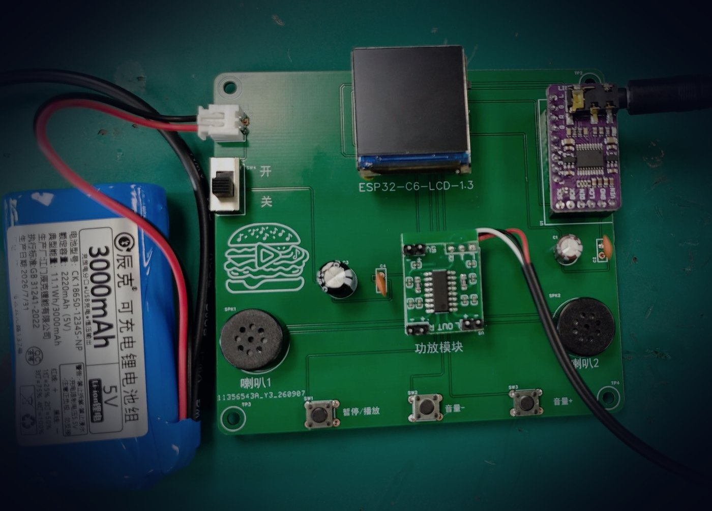

ESP32-C6 网络音乐播放器「音乐汉堡」
个人项目 · 独立开发
从零做的一台网络音乐播放器：ESP32-C6 主控 + PCM5102 DAC，扩展板 PCB 打样两版，浏览器端可拖动进度条控制播放。
- 用 C/C++ 集成 ESP8266Audio，打通「SD 卡读取 → MP3 解码 → I2S 输出至 PCM5102 / 功放」的播放链路，实现播放、暂停恢复、音量调节与进度跳转。
- HTTP 文件上传管理 + WebSocket 双向控制：状态变化触发推送、3 s 周期推送，实体按键、设备播放状态与浏览器界面三方同步。
- 集成热点配网与 WiFi 配置持久化；针对 PCM5102 冷启动无声 / 杂音问题，调整上电等待与 I2S 初始化流程，完成冷启动与复位场景验证。
2026.06 – 2026.09
